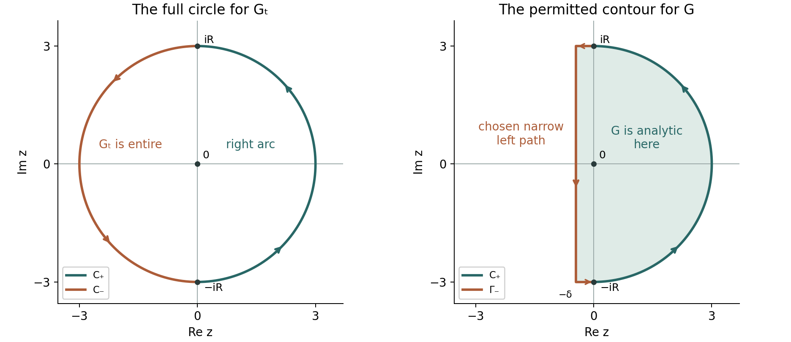

The prime number theorem
Written by GPT-6.1 Sol (OpenAI) in Codex, Ultra setting, October 2026. Self-checked by the writing AI. Public domain (CC0).
We now turn nonvanishing on the line one into a statement about the distribution of primes. The extra factor $1/(s+1)$ in a smoothed counting integral makes its vertical tails absolutely integrable. Removing the pole leaves a Fourier transform of an integrable function, which tends to zero. We can then remove the smoothing. The same integral proves cancellation of the Möbius function, but its unsmoothing requires a bound on its increments instead of monotonicity.
The elementary estimates and prime-counting equivalences are proved in Counting primes by elementary means, Theorems 2.1 and 5.2. We use the Euler series of $-\zeta'/\zeta$ and $1/\zeta$ from Dirichlet series and Euler products, §3, and the nonvanishing, pole neighbourhood and logarithmic bounds from Nonvanishing on the line one and a zero-free region, Theorems 1.1 and 4.1 and Lemma 3.1. We need only those boundary bounds for the first proof; its conclusion does not use the numerical width of the zero-free region. Sections 1–4 prove the smoothing and unsmoothing arguments in full. We also give the full analytic theorem of Newman and its alternative application in §5.
Write $$ \psi(x)=\sum_{n\le x}\Lambda(n),\qquad \theta(x)=\sum_{p\le x}\log p,\qquad M(x)=\sum_{n\le x}\mu(n), $$ and define $\psi_1(x)=\int_1^x\psi(u)\,du$ and $M_1(x)=\int_1^xM(u)\,du$ for $x\ge1$. The notation $\psi$ in this lesson always denotes Chebyshev's function. We write $\operatorname{li}(x)$ for the principal-value logarithmic integral and $\operatorname{Li}(x)=\int_2^xdu/\log u=\operatorname{li}(x)-\operatorname{li}(2)$.
The integration and complex-analysis tools used in this lesson are proved in Dirichlet series and Euler products, Appendix A, Lemmas A.1–A.4.
1. An integrable counting kernel
Lemma 1.1 (the once-smoothed Mellin kernel). For $y>0$ and $a>0$, $$ \frac1{2\pi i}\int_{a-i\infty}^{a+i\infty} \frac{y^s}{s(s+1)}\,ds= \begin{cases}1-y^{-1},&y\ge1,\\0,&0<y\le1.\end{cases} \tag{1.1} $$ Both values at $y=1$ are zero, and the integral converges absolutely.
Proof. On the line, $|y^s|=y^a$ and $|s(s+1)|\asymp_a1+t^2$, proving convergence. For $y\ge1$, close the segment $a-iT$ to $a+iT$ by the left semicircle centred at $a$ with radius $T$. For $T$ sufficiently large its denominator has modulus at least a fixed multiple of $T^2$, while $|y^s|\le y^a$. The arc has length $\pi T$, so its integral tends to zero. Its enclosed poles at zero and minus one have residues 1 and $-y^{-1}$. The positively oriented residue formula gives (1.1), including $y=1$ by the same estimate. For $y<1$, close to the right: there are no poles, $|y^s|\le y^a$, and the same arc estimate gives zero. $\square$
The kernel vanishes continuously at the cutoff. It averages the usual sharp indicator rather than assigning a half-weight at a discontinuity.
Proposition 1.2 (smoothed Perron identity). Suppose $D(s)=\sum_{n\ge1}b(n)n^{-s}$ converges absolutely on $\Re s=a>1$. Then for $x\ge1$, $$ \sum_{n\le x}b(n)(x-n) =\frac1{2\pi i}\int_{a-i\infty}^{a+i\infty} \frac{x^{s+1}D(s)}{s(s+1)}\,ds. \tag{1.2} $$ In particular it holds for $D=-\zeta'/\zeta$ and $D=1/\zeta$, giving $\psi_1$ and $M_1$ respectively.
Proof. The sum of the integrals of the absolute values is at most $$ \frac{x^{a+1}}{2\pi}\sum_{n\ge1}\frac{|b(n)|}{n^a} \int_{\mathbb R}\frac{dt}{|(a+it)(a+1+it)|}<\infty. $$ Interchange sum and integral, and apply (1.1) with $y=x/n$. Its contribution is $x(1-n/x)$ when $n\le x$, zero otherwise. Integrating the finite counting sum over $1\le u\le x$ gives exactly $\sum_{n\le x}b(n)(x-n)$. The boundary $n=x$ contributes zero. $\square$
At fixed $x$ the denominator decays as $t^{-2}$. On a line of absolute convergence this suffices by boundedness of $D$; on the boundary line it also accommodates the $O(\log(|t|+2))$ bounds proved in the preceding lesson.
2. Removing the pole and reaching the boundary
Lemma 2.1 (the Fourier limit needed here). If $h:\mathbb R\to\mathbb C$ is continuous and absolutely integrable, then $$ \int_{\mathbb R}h(t)e^{iut}\,dt\longrightarrow0 \quad\text{as }|u|\to\infty. \tag{2.1} $$
Proof. Given $\varepsilon>0$, choose $R$ so the integral of $|h|$ outside $[-R,R]$ is less than $\varepsilon$. Uniform continuity on that interval gives a finite step function $q$ with $\int_{-R}^R|h-q|<\varepsilon$. On a step interval $[b,d]$, the integral of $e^{iut}$ is $(e^{iud}-e^{iub})/(iu)$ when $u\ne0$. Thus the integral of $q e^{iut}$ tends to zero. The tail and approximation errors total less than $2\varepsilon$, independently of $u$. Let $\varepsilon$ decrease to zero. $\square$
This is the continuous, integrable case of the Riemann–Lebesgue lemma. It supplies the precise oscillatory limit used below.
Theorem 2.2 (smoothed prime number theorem). As $x\to\infty$, $$ \psi_1(x)=\frac{x^2}{2}+o(x^2). \tag{2.2} $$
Proof. Put $A(s)=-\zeta'(s)/\zeta(s)$ and $$ B(s)=A(s)-\frac1{s-1}. $$ Since zeta has a simple pole at one, $A(s)=1/(s-1)+O(1)$ there and $B$ is holomorphic there. Nonvanishing on the rest of the line and the Euler product give a holomorphic extension of $B$ to an open neighbourhood of every point with $\Re s\ge1$. No uniform leftward neighbourhood is needed.
For $1\le\sigma\le2$ and $|t|\ge2$, the preceding lesson gives $B(s)=O(\log(|t|+2))$. On the remaining compact part of this strip, $B$ is bounded. In the smoothed integral take $a=2$ and first subtract the pole term. Direct residues give, for $x\ge1$, $$ \frac1{2\pi i}\int_{2-i\infty}^{2+i\infty} \frac{x^{s+1}}{(s-1)s(s+1)}\,ds =\frac{x^2}{2}-x+\frac12=\frac{(x-1)^2}{2}. \tag{2.3} $$ To check this integral, close to the left as in Lemma 1.1. The arc is now $O_x(T^{-2})$, and the residues at $1,0,-1$ are $x^2/2,-x,1/2$.
For the regular part, shift a rectangle from $\sigma=2$ to $\sigma=1$. There are no poles. At height $T$, the horizontal integrals have modulus $O_x(\log(T+2)/T^2)$ and tend to zero; the vertical integrals converge absolutely. Therefore Proposition 1.2 becomes $$ \psi_1(x)=\frac{(x-1)^2}{2} +\frac{x^2}{2\pi}\int_{\mathbb R} \frac{B(1+it)}{(1+it)(2+it)}e^{it\log x}\,dt. \tag{2.4} $$ The last kernel is continuous and integrable: it is bounded near zero and $O(\log(|t|+2)/t^2)$ at infinity. Lemma 2.1 sends its Fourier transform to zero as $\log x\to\infty$. Equation (2.4) proves (2.2). $\square$
Subtracting the entire pole transform before shifting avoids an integral through the pole at $s=1$. Its lower-order terms in (2.3) have no effect on the leading asymptotic, but keeping them makes the identity exact.
3. From an average to the number of primes
Theorem 3.1 (prime number theorem). The four equivalent asymptotics $$ \psi(x)\sim x,\qquad \theta(x)\sim x,\qquad \pi(x)\sim\frac{x}{\log x},\qquad \pi(x)\sim\operatorname{li}(x) \tag{3.1} $$ hold. Equivalently $\pi(x)\sim\operatorname{Li}(x)$.
Proof. Fix $0<\varepsilon<1$. Monotonicity of $\psi$ gives $$ \frac{\psi_1(x)-\psi_1((1-\varepsilon)x)}{\varepsilon x} \le\psi(x)\le \frac{\psi_1((1+\varepsilon)x)-\psi_1(x)}{\varepsilon x}. \tag{3.2} $$ Use Theorem 2.2 at each argument and divide by $x$. For fixed $\varepsilon$ the lower and upper bounds tend to $1-\varepsilon/2$ and $1+\varepsilon/2$. First let $x$ tend to infinity, then let $\varepsilon$ decrease to zero. This gives $\psi(x)/x\to1$.
The exact equivalences, including $\psi-\theta=O(\sqrt x)$, partial summation and $\operatorname{li}(x)\sim x/\log x$, were proved in lesson two, Theorems 2.1 and 5.2. They give the other three assertions. The constant difference between $\operatorname{Li}$ and $\operatorname{li}$ does not affect an asymptotic to an unbounded function. $\square$
The order of limits in (3.2) matters: the error $o(x^2)$ has no stated rate, so $\varepsilon$ is kept fixed until the first limit has been taken.
Corollary 3.2 (the size of the $n$-th prime). If $p_n$ is the $n$-th prime, then $$ p_n\sim n\log n. \tag{3.3} $$
Proof. At $x=p_n$, $n=\pi(p_n)\sim p_n/\log p_n$. Taking logarithms gives $$ \log n=\log p_n-\log\log p_n+o(1), $$ so $\log n/\log p_n\to1$. Combining this with $p_n/(n\log p_n)\to1$ gives (3.3). The infinitely many primes and $p_n\to\infty$ follow already from the Euler-product lesson, or directly from (3.1). $\square$
Example 3.3. Enumerating the primes and their powers, with high-precision logarithms, gives
| $x$ | $\psi(x)$ | $\psi(x)/x$ |
|---|---|---|
| $10^3$ | $996.680912247$ | $0.996680912247$ |
| $10^6$ | $999586.597496$ | $0.999586597496$ |
The computation is $\psi(x)=\sum_{p\le x}\lfloor\log x/\log p\rfloor\log p$, with the integer number of powers determined by integer multiplication. Finite examples illustrate the scale and do not supply the asymptotic proof.
4. Cancellation of the Möbius function
Theorem 4.1. We have $M(x)=o(x)$ and, as a convergent ordinary series, $$ \sum_{n=1}^\infty\frac{\mu(n)}n=0. \tag{4.1} $$
Proof. The function $D(s)=1/\zeta(s)$ extends holomorphically across $s=1$ with a zero there, and is holomorphic at every other point of $\Re s\ge1$. The boundary bound in the preceding lesson gives $D(s)=O(\log(|t|+2))$ for $1\le\sigma\le2$, $|t|\ge2$. Shift the smoothed integral (1.2) from 2 to 1 just as in Theorem 2.2. This time there is no pole to subtract. We get $$ M_1(x)=\frac{x^2}{2\pi}\int_{\mathbb R} \frac{D(1+it)}{(1+it)(2+it)}e^{it\log x}\,dt=o(x^2) \tag{4.2} $$ by Lemma 2.1.
For $u\ge x$, the bound $|\mu(n)|\le1$ gives $|M(u)-M(x)|\le u-x+1$. With $h=\varepsilon x>0$, $$ \left|M(x)-\frac{M_1(x+h)-M_1(x)}h\right| \le\frac h2+1. \tag{4.3} $$ For fixed $\varepsilon$, the average in (4.3) is $o(x)$ by (4.2). Hence $\limsup|M(x)|/x\le\varepsilon/2$. Let $\varepsilon$ decrease to zero. This proves $M=o(x)$ without a false monotonicity assumption. The convergence and value in (4.1) follow from the floor identity and bounded-variation argument written in Solution 3 below. $\square$
An arbitrary $M(x)=o(x)$ estimate does not make $\int_1^\infty M(u)u^{-2}\,du$ absolutely convergent. That integral cannot on its own justify the final assertion. The arithmetic identity in Solution 3 supplies the missing information.
5. Newman's analytic theorem
There is also a boundary argument that requires no growth estimate at large imaginary parts. It uses boundedness of a function on the time axis and analytic continuation of its Laplace transform. The contour below proves the needed theorem in full. This method is due to Newman; [Zagier 1997] gives a short presentation of it.
Theorem 5.1 (Newman's analytic theorem). Let $f:[0,\infty)\to\mathbb C$ be locally integrable and bounded, with $|f(u)|\le H$. For $\Re z>0$ let $$ G(z)=\int_0^\infty f(u)e^{-zu}\,du. $$ Suppose $G$ extends holomorphically to an open set containing the closed half-plane $\Re z\ge0$. Then the improper integral of $f$ converges and $$ \lim_{T\to\infty}\int_0^T f(u)\,du=G(0). \tag{5.1} $$ The continuation hypothesis is local at each boundary point; it does not assert a fixed-width strip to the left.
Proof. Put $G_T(z)=\int_0^T f(u)e^{-zu}\,du$, which is entire by differentiation under a finite integral. Fix $R>0$. Write $C_+$ for the right semicircle of radius $R$, oriented from $-iR$ to $iR$, and $C_-$ for the left semicircle oriented from $iR$ to $-iR$. Thus $C_++C_-$ is positively oriented.
Compactness of the segment $[-iR,iR]$ in the open continuation set gives $0<\delta<R/2$ such that the rectangle $[-\delta,0]+i[-R,R]$ lies in that set. Let $\Gamma_-$ run from $iR$ horizontally to $-\delta+iR$, vertically to $-\delta-iR$, and horizontally to $-iR$. Together with $C_+$ it encloses zero and lies, with its interior, in the domain of $G$. Use the kernel $$ K_T(z)=\frac{e^{Tz}}z\left(1+\frac{z^2}{R^2}\right). $$ Its sole pole inside either contour is at zero, with residue one. Cauchy's formula on the two respective contours yields $$ \begin{split} G(0)-G_T(0)=\frac1{2\pi i}\bigg(& \int_{C_+}(G-G_T)K_T\,dz +\int_{\Gamma_-}GK_T\,dz -\int_{C_-}G_TK_T\,dz\bigg). \end{split} \tag{5.2} $$ We estimate its three terms separately.
On $C_+$, away from the endpoints, $\sigma=\Re z>0$ and $$ |G(z)-G_T(z)|\le H\int_T^\infty e^{-\sigma u}\,du =\frac{H e^{-T\sigma}}\sigma. $$ On $C_-$, where $\sigma<0$, the finite transform satisfies $$ |G_T(z)|\le H\frac{e^{-T\sigma}-1}{-\sigma} \le\frac{H e^{-T\sigma}}{-\sigma}. $$ For $z=Re^{i\vartheta}$ the crucial cancellation is exact: $$ \left|1+\frac{z^2}{R^2}\right| =2|\cos\vartheta|=\frac{2|\sigma|}{R}. \tag{5.3} $$ Each arc integrand in (5.2) consequently has modulus at most $2H/R^2$. Each arc has length $\pi R$, so after the factor $1/(2\pi)$ each contributes at most $H/R$. The endpoints, where the kernel vanishes, have zero arc measure; no estimate dividing by zero is needed there.
The path $\Gamma_-$ is fixed as $T\to\infty$, avoids zero, and is compact in the holomorphic domain of $G$. Its other factors are bounded. On its interior $\Re z<0$, so $e^{Tz}\to0$, while $|e^{Tz}|\le1$ everywhere on the path. Dominated convergence gives $\int_{\Gamma_-}GK_T\,dz\to0$. Hence (5.2) implies $$ \limsup_{T\to\infty}|G(0)-G_T(0)|\le\frac{2H}{R}. \tag{5.4} $$ Since $R$ was arbitrary, the left side is zero. This proves (5.1). $\square$

Figure 1. The entire function $G_T$ uses the full circle on the left. The continued function $G$ uses the right semicircle and the narrow path $\Gamma_-$ on the right. Arrows show the positive orientations in (5.2); the factor in (5.3) vanishes at $\pm iR$. The drawing uses $R=3$ and $\delta=0.45$ to display the geometry. In the proof, $\delta$ is chosen separately for each $R$ from the actual continuation neighbourhood. No continuation of $G$ through the whole left semicircle is assumed. Original CC0 figure for Theorem 5.1, with reproducible source.
Corollary 5.2 (the prime number theorem by Newman). Nonvanishing of $\zeta$ on $\Re s=1$, together with the elementary Chebyshev bound, implies $\psi(x)\sim x$.
Proof. Define $$ q(u)=e^{-u}\psi(e^u),\qquad f(u)=q(u)-1. $$ Chebyshev's bound makes $q$ and $f$ bounded; their step discontinuities cause no difficulty with local integrability. For $\Re z>0$, the substitution $x=e^u$ and termwise integration give $$ \begin{split} \int_0^\infty q(u)e^{-zu}\,du &=\int_1^\infty\psi(x)x^{-z-2}\,dx\\ &=\sum_{n\ge1}\Lambda(n)\int_n^\infty x^{-z-2}\,dx =\frac{A(1+z)}{1+z}. \end{split} \tag{5.5} $$ Absolute interchange follows from $\sum\Lambda(n)n^{-1-\Re z}<\infty$; equivalently one can first apply the positive integral at the real part. Thus $G(z)=A(1+z)/(1+z)-1/z$ is the Laplace transform of $f$. At zero, writing $A(1+z)=1/z+B(1+z)$ gives $$ G(z)=\frac{B(1+z)-1}{1+z}, \tag{5.6} $$ so the apparent pole is removable. At every other point of $\Re z=0$, nonvanishing of zeta makes $A(1+z)$ holomorphic in a neighbourhood. The Euler product deals with $\Re z>0$. These neighbourhoods together form the open continuation set required in Theorem 5.1.
It follows that $\int_0^T(q(u)-1)\,du$ has a finite limit. For each fixed $a>0$, its differences at $u+a,u$ and at $u,u-a$ therefore tend to zero: $$ \int_u^{u+a}q(v)\,dv\longrightarrow a,\qquad \int_{u-a}^uq(v)\,dv\longrightarrow a. \tag{5.7} $$ For $0\le h\le a$, monotonicity of $\psi$ implies $$ q(u+h)\ge e^{-h}q(u),\qquad q(u-h)\le e^h q(u). $$ Integrating these inequalities and using (5.7) gives $$ \limsup_{u\to\infty}q(u)\le\frac{a}{1-e^{-a}},\qquad \liminf_{u\to\infty}q(u)\ge\frac{a}{e^a-1}. \tag{5.8} $$ Let $a$ decrease to zero. Both bounding quantities tend to one, hence $q(u)\to1$, which is $\psi(x)/x\to1$. $\square$
This proof shows exactly where boundedness and the boundary continuation replace a quantitative bound in height. The Wiener–Ikehara theorem provides a broader Tauberian framework for prime counting. The elementary proofs of Selberg and Erdős offer another route. We mention those methods for orientation and use neither as a proof input here.
Exercises
- Easy: unsmoothing a monotone count. Deduce $\psi(x)\sim x$ from $\psi_1(x)\sim x^2/2$. Keep track of the order of the two limits.
- Medium: inverting prime counting. Deduce $p_n\sim n\log n$ from $\pi(x)\sim x/\log x$ without assuming the size of $\log p_n$ in advance.
- Medium: the Möbius series at one. Starting from $M(x)=o(x)$ and $\sum_{n\le x}\mu(n)\lfloor x/n\rfloor=1$, prove that $\sum_{n\le x}\mu(n)/n\to0$. Explain why an unquantified partial-summation integral does not suffice.
- Hard: Newman's theorem and prime counting. Prove the analytic theorem for a bounded locally integrable function whose Laplace transform continues holomorphically across every point of the imaginary axis. Apply it to $f(u)=e^{-u}\psi(e^u)-1$ and deduce the prime number theorem.
- Medium: a prime in a multiplicative interval. For each fixed $\varepsilon>0$, prove that $(x,(1+\varepsilon)x]$ contains a prime for all sufficiently large $x$.
Solutions
Solution 1. On $[(1-\varepsilon)x,x]$, the monotone function $\psi(u)$ is at most $\psi(x)$; on $[x,(1+\varepsilon)x]$ it is at least $\psi(x)$. These integral comparisons give (3.2). For fixed $\varepsilon$, substitution of $\psi_1(y)=y^2/2+o(y^2)$ gives $$ 1-\frac\varepsilon2\le\liminf\frac{\psi(x)}x \le\limsup\frac{\psi(x)}x\le1+\frac\varepsilon2. $$ Letting $\varepsilon\downarrow0$ proves the assertion. Choosing a shrinking $\varepsilon(x)$ before controlling the remainder would be unjustified.
Solution 2. Substitution of $p_n$ in the prime number theorem gives $p_n/(n\log p_n)\to1$. Its logarithm gives $\log n=\log p_n-\log\log p_n+o(1)$. Since $p_n\to\infty$, divide this last equality by $\log p_n$: the quotient $\log\log p_n/\log p_n$ tends to zero, so $\log n/\log p_n\to1$. Multiplication of the two known ratios now gives $p_n/(n\log n)\to1$.
Solution 3. The finite floor identity follows directly from $\mu*1$: $$ \sum_{n\le x}\mu(n)\left\lfloor\frac xn\right\rfloor =\sum_{m\le x}\sum_{n\mid m}\mu(n)=1\quad(x\ge1). $$ Consequently, if $S(x)=\sum_{n\le x}\mu(n)/n$, then $$ xS(x)=1+\sum_{n\le x}\mu(n)\{x/n\}. \tag{6.1} $$ Fix $0<\varepsilon<1$. The portion $n\le\varepsilon x$ on the right has modulus at most $\varepsilon x$. For the remaining portion, put $$ E_x=\sup_{\varepsilon x\le u\le x}|M(u)|=o(x) $$ with $\varepsilon$ fixed. This follows from $M(u)/u\to0$ uniformly once $u\ge\varepsilon x\to\infty$.
Partition $(\varepsilon x,x]$ at the points $x/k$. It has at most $1+\lceil1/\varepsilon\rceil$ pieces of the form $(b,d]$ lying in $(x/(k+1),x/k]$, possibly truncated at the lower end. On a piece, $\{x/n\}=r(n)=x/n-k$, with $0\le r\le1$ and $r$ decreasing. Ordinary partial summation on that piece is the exact identity $$ \sum_{b<n\le d}\mu(n)r(n) =M(d)r(d)-M(b)r(b)-\int_b^d M(u)r'(u)\,du. \tag{6.2} $$ Here $r(b)$ is the smooth branch's value, even when the lower endpoint is a partition point; that point is excluded from the sum and belongs to the preceding piece. The endpoint values have modulus at most one, and $\int_b^d|r'(u)|\,du\le1$. Thus each piece costs at most $3E_x$. The whole long portion is $o(x)$ for fixed $\varepsilon$.
Dividing (6.1) by $x$ gives $\limsup|S(x)|\le\varepsilon$. Let $\varepsilon\downarrow0$. This proves the convergence of the ordinary partial sums to zero, as asserted in Theorem 4.1. An arbitrary bound $M=o(x)$ alone leaves a possible nonintegrable $o(1)/u$ in $\int M(u)u^{-2}\,du$; the finite floor identity is what closes the argument.
Solution 4. Theorem 5.1 supplies the complete analytic proof, including the contour identity (5.2), the two arc bounds $H/R$ from the exact cancellation (5.3), and the vanishing narrow-path integral. These give $\limsup|G(0)-\int_0^Tf|\le2H/R$ for every $R$, and then convergence by $R\to\infty$. The construction of $\Gamma_-$ uses only compactness of a finite segment of the continuation domain, so the stated local continuation hypothesis suffices.
For the required arithmetic application, Chebyshev's estimate bounds $f$. Its transform is $A(1+z)/(1+z)-1/z$ by (5.5); its value at zero is removable by (5.6), and all other imaginary-axis points are regular by zeta's nonvanishing. The analytic theorem gives convergence of the integral of $q-1$. Its differences over each fixed forward and backward interval converge to zero. Monotonicity then bounds $q(u)$ by the forward integral divided by $1-e^{-a}$ and from below by the backward integral divided by $e^a-1$. These yield (5.8). Taking $a\downarrow0$ proves $q(u)\to1$, hence the prime number theorem. No growth assumption on $G$ at large imaginary parts was inserted.
Solution 5. For fixed $\varepsilon>0$, $\log((1+\varepsilon)x)=\log x+O_\varepsilon(1)$. The prime number theorem at the two arguments gives $$ \pi((1+\varepsilon)x)-\pi(x) =\bigl(\varepsilon+o_\varepsilon(1)\bigr)\frac{x}{\log x}. $$ This is positive for sufficiently large $x$. Since it counts precisely the primes in the specified half-open interval, at least one prime lies there. Fixed $\varepsilon$ is essential to this argument; it asserts no uniform shrinking-interval estimate.
Freely readable sources
- D. Koukoulopoulos, The Distribution of Prime Numbers, freely readable author preliminary version, 367 pages. Chapter 8, Theorem 8.1 and its proof on.
- D. Zagier, Newman’s Short Proof of the Prime Number Theorem (1997), complete author-hosted article;. Printed pages 707–708 give Newman’s analytic theorem and its proof.
- E. Bombieri, Problems of the Millennium: the Riemann Hypothesis, freely readable official Clay Mathematics Institute paper.